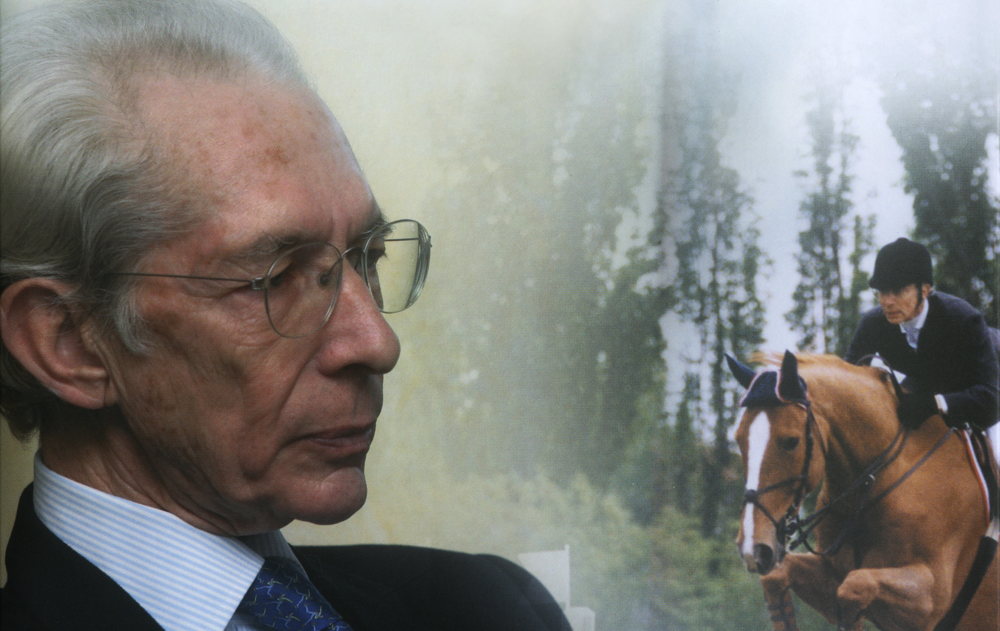

B i o g r a f i a

Vittorio Orlandi è stato un grande Cavaliere e un Imprenditore di successo capace di coniugare e rendere sinergiche le qualità manageriali proiettate all’innovazione. Cominciò la sua carriera agonistica con i purosangue, montando in campagna, poi intorno a 17 anni, iniziò con il salto ostacoli. Seguì per qualche mese la scuola di Ulderico Fioretti di Firenze, per proseguire poi da solo, lavorando e correggendosi di continuo. E i risultati arrivarono, insieme ai cavalli che fecero la storia del salto ostacoli azzurro, con l’aiuto tecnico di Graziano Mancinelli. Tra i suoi più grandi successi, una medaglia d’oro e due argenti nel Campionato italiano nel ’69 e nel ’70 con Fulmer e nel 74 con Fiorello. Nelle Olimpiadi di Monaco nel ’72, vinse un bronzo a squadre con Fulmer, mentre nel ’73 fu quarto nel Campionato Europeo di Hickstead con Fiorello e Fulmer.
La famiglia ha sempre avuto un ruolo fondamentale nella sua vita. I suoi tre fratelli (Susy, Sergio e Rossana), insieme ai suoi figli (Ismaele, Massimiliano e Dimitri) e Nelly Mancinelli, sua compagna di vita, sono l’esempio lampante di un legame che da oltre tre generazioni, è sempre più forte. Uomo di cavalli e grande manager, Vittorio Orlandi capì fin da ragazzo che se avesse voluto andare avanti nello sport a certi livelli, avrebbe dovuto darsi da fare nel lavoro.
Così, a soli 19 anni, entrò nel gruppo di famiglia, lasciando da parte l’università e concentrandosi in un’area dell’attività, quella dei “tessuti non tessuti”, in cui scommesse tutto. Terminata l’attività di Cavaliere di alto livello, si è dedicato a varie iniziative per aiutare l’equitazione italiana a crescere. Ricordiamo il Pony Club Fiorello che lanciò l’equitazione sui pony in Italia, APICE, l’associazione italiana dei proprietari che ha portato questa figura all’apice della filiera e l’ultima nata, Scuderia Italia, una società con lo scopo di comprare cavalli da fare crescere per poter affrontare.